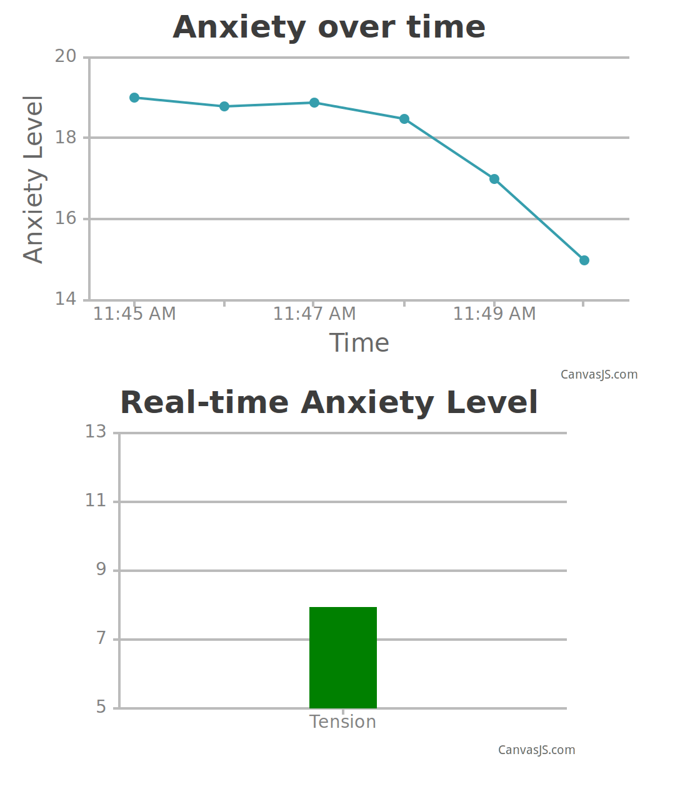
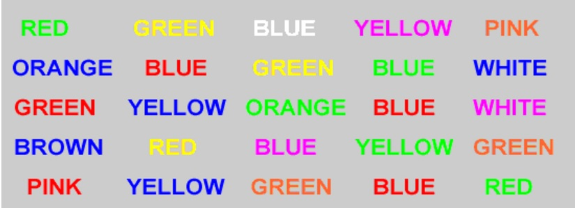

Facts About Anxiety
- Anxiety is the body's natural response to danger - an automatic alarm that goes off when you feel threatened, under pressure, or are facing a stressful situation. Anxiety isn't always a bad thing. It can help you stay alert and focused, spur you to action, and motivate you to solve problems. But when anxiety is constant or overwhelming and interferes with your relationships and activities, it stops being a motivator and becomes a major obstacle.
- Over 18.1% of the U.S. Adult population has been diagnosed with an Anxiety disorder.
- Average age of diagnosis is 11 years old.
- A study by the National Institute of Health in 2010 says that "Most people with mental disorders in the United States remain either untreated or poorly treated. Interventions are needed to enhance treatment initiation and quality".
The Product
Soothe aims to detect anxiety attacks before they happen, and give its user the mental tools to prevent them. Electromyogram (EMG) data is gathered via a Myo armband and analyzed to determine what level of anxiety the user is feeling. Thanks to our robust algorithm, Soothe's data collection has been shown to yield results comparable to specialized lab studies utilizing purpose-built EMG's despite using existing consumer technology. As it is very user friendly, we anticipate being able to help individuals of all ages manage their anxiety.

How Does It Work?

Soothe combines the existing technologies of the Myo Armband with OpenBCI and has coupled them with our sophisticated software in order to allow for a bridge between doctors, patients and their support network.
Soothe then tracks the user's anxiety levels and logs them every minute, as well as displays a live representation of stress levels. This interface provides a positive feedback loop for the user - calm thoughts and relaxation will yield visual results in real time. Relaxation thus becomes tangible, and the method for obtaining it becomes an automatic response to stress.
How Was It Tested?
To create anxiety, so that we could measure stress, we created our very own version of the Stroop Test, a famous test used in Psychology to stimulate stressors. When the name of a color is printed in a color not given by its name for example, the word "BLUE" printed in red ink instead of blue ink, naming the color of the word takes longer and causes the individual to become stressed.
The first half of the test has the word and the color matching, and the second half of the test is like the image on the right. After a section where the color and the name did not match, Soothe coaches the user to focus and relax and regain control over their stressor.
